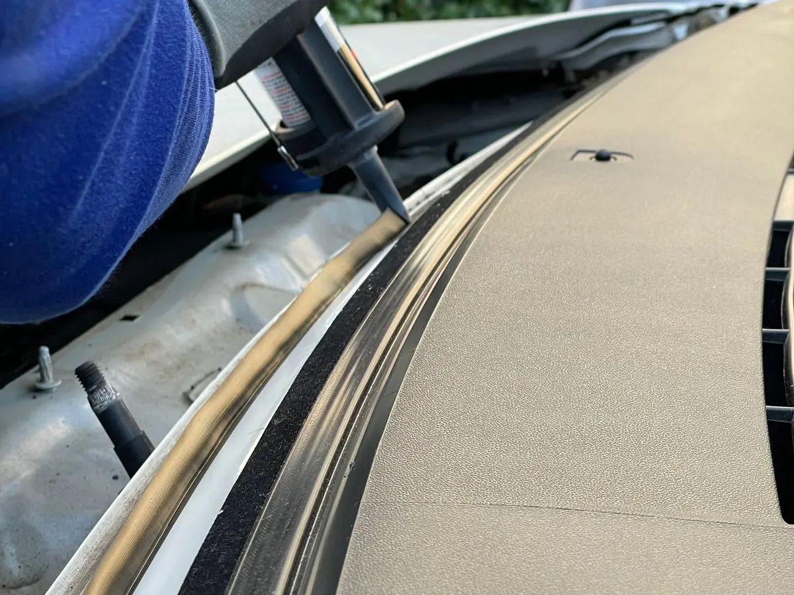

Windshield replacement in Fort Worth for cars, trucks and SUVs, done in your driveway or office lot. We cut out the cracked glass, set a new windshield in fresh urethane, calibrate the camera if your car has one, and tell you when it’s safe to drive.

A windshield replacement in Fort Worth starts with removing the wipers, cowl panel and moldings. The tech cuts through the old urethane, lifts the glass out and trims the old bead down to a thin, clean layer.
Primer goes on any bare metal, a fresh bead of urethane goes around the frame, and the new glass is set with suction-cup handles so it seats evenly. The trim goes back on, and the tech walks you through the drive-away time before leaving.
Most Fort Worth windshields crack from a rock first. Gravel trucks, construction on I-35W and Loop 820, and the long stretches of Highway 287 send plenty of stones into the glass.
Heat finishes the job. A summer afternoon over 100 degrees, then the AC on full, puts stress right on the weak spot. Winter does it in reverse when someone blasts the defroster on frozen glass. Hail is the other big cause; spring storms in the Metroplex can pit an entire windshield in a few minutes.
The car decides most of the cost of windshield replacement in Fort Worth. A plain windshield on an older sedan is the simple end. Rain sensors, heated glass, an acoustic layer, a heads-up display or a forward camera all move the price up.
People ask, “Why is my quote higher than my neighbor’s?” Usually it’s the camera, since calibration is the line most people don’t expect. Glass from the carmaker usually costs more than OEM-equivalent glass. With comprehensive insurance you may only owe your deductible. Call (817) 769-3783 with your year, make and model for a free quote.
| OEM glass | OEM-equivalent glass |
|---|---|
| Made for the carmaker and carries its logo. | Made to the same fit and safety standards by glass makers like Pilkington, Fuyao or Vitro. |
| Sometimes required by leases and some newer cars with sensitive cameras. | Works for most cars and is what many insurance claims pay for. |
| Costs more and can take longer to arrive. | Usually costs less and arrives sooner. |
If your lease or your car’s camera system calls for OEM, we’ll tell you before ordering.
Safe drive-away time after a windshield replacement in Fort Worth depends on the urethane and the weather, usually between 30 minutes and a few hours. The tech will tell you the exact time for the product used on your car. Avoid car washes for a day or two.
A properly installed windshield in Fort Worth should not leak. Leaks usually come from a gap in the urethane bead or a rusty frame that wasn’t treated. If you see water or hear wind noise after an install, call and have it checked.
In Texas, windshield replacement usually falls under comprehensive coverage, and you pay the deductible on that coverage. Texas does not require insurers to waive that deductible for glass, so check your policy. We can help you start the claim when you call.
If your car has a forward camera near the rearview mirror for lane-keeping or automatic braking, it needs calibration after a windshield replacement in Fort Worth. We check your VIN before ordering glass so you know up front.
Call now for a free quote. We come to your home or office in Fort Worth.
Call (817) 769-3783 for a Free Quote